![[srfi-Z-G-3.png]](srfi-Z-G-3.png)
This section contains a theoretical justification for the concept ``compare function''. First an axiomatic definition of compare functions is given. Then it is proved that compare functions are just an unconventional way of defining total orders on equivalence classes of elements -- and mathematically that is all there is to say about compare functions.
At this point, a mathematician may wonder why we introduce compare functions in the first place. The answer is: Because they are convenient and efficient for writing programs involving total orders.
In order to make this SRFI as accessible as possible we give the theorems and proofs explicitly, no matter how trivial they are.
A compare function on a set 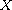 is a function
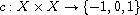 such that
for all
We call the properties (R) reflexivity, (A) antisymmetry, and (T) transitivity.
The archetypical compare function is
it compares real numbers with respect
to their canonical order.
Obviously, 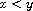 if and only if ![[srfi-Z-G-7.png]](srfi-Z-G-7.png) ,
which we will fix as our sign convention:
Instead of writing ``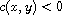'' we will often
simply write ``
,
which we will fix as our sign convention:
Instead of writing ``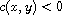'' we will often
simply write ``![[srfi-Z-G-9.png]](srfi-Z-G-9.png) '' when the compare function
'' when the compare function
![[srfi-Z-G-10.png]](srfi-Z-G-10.png) is obvious from the context. (And of course,
the convention extends to
is obvious from the context. (And of course,
the convention extends to ![[srfi-Z-G-11.png]](srfi-Z-G-11.png) , , 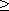,
and 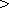 in the obvious way.)
, , 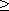,
and 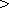 in the obvious way.)
The first theorem states that each compare function gives rise to an equivalence relation in a natural way.
Let ![[srfi-Z-G-15.png]](srfi-Z-G-15.png) be a compare function on
be a compare function on ![[srfi-Z-G-16.png]](srfi-Z-G-16.png) .
Then the relation
.
Then the relation ![[srfi-Z-G-17.png]](srfi-Z-G-17.png) defined by
defined by
for ![[srfi-Z-G-19.png]](srfi-Z-G-19.png) , is an equivalence relation on
, is an equivalence relation on ![[srfi-Z-G-20.png]](srfi-Z-G-20.png) .
.
Recall that an equivalence relation is reflexive, symmetric, and transitive [2]. We check:
``Reflexive'': Consider 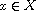. By (R) 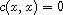, so 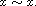
``Symmetric'':
Consider 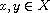 such that ![[srfi-Z-G-25.png]](srfi-Z-G-25.png) .
By definition of
.
By definition of ![[srfi-Z-G-26.png]](srfi-Z-G-26.png) we have 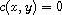.
By (A) this implies 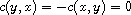.
Thus 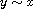.
we have 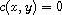.
By (A) this implies 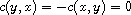.
Thus 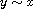.
``Transitive'':
Consider ![[srfi-Z-G-30.png]](srfi-Z-G-30.png) such that 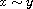 and 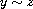.
This means 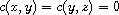.
By (T) this implies 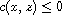.
Moreover, by symmetry also 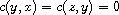 and
by (T) this implies 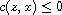.
Hence, 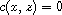 meaning 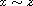.
such that 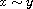 and 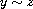.
This means 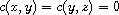.
By (T) this implies 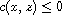.
Moreover, by symmetry also 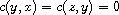 and
by (T) this implies 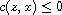.
Hence, 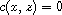 meaning 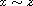.
The next theorem states that the equivalence classes defined by a compare function are also naturally ordered.
Let ![[srfi-Z-G-39.png]](srfi-Z-G-39.png) be a compare function on
be a compare function on ![[srfi-Z-G-40.png]](srfi-Z-G-40.png) and let
and let ![[srfi-Z-G-41.png]](srfi-Z-G-41.png) be
the equivalence relation of the previous theorem.
We write 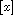 for the equivalence class containing
be
the equivalence relation of the previous theorem.
We write 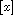 for the equivalence class containing ![[srfi-Z-G-43.png]](srfi-Z-G-43.png) ,
i.e. 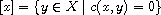.
Then the relation
,
i.e. 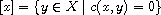.
Then the relation ![[srfi-Z-G-45.png]](srfi-Z-G-45.png) defined by
defined by
for ![[srfi-Z-G-47.png]](srfi-Z-G-47.png) , is a total order on the set
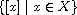 of all equivalence classes.
, is a total order on the set
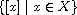 of all equivalence classes.
Recall that a total order relation is reflexive, (weakly) antisymmetric, transitive, and all elements are comparable [1]. Again, we check:
``Reflexive'':
Consider ![[srfi-Z-G-49.png]](srfi-Z-G-49.png) .
By (R)
.
By (R) ![[srfi-Z-G-50.png]](srfi-Z-G-50.png) , so 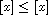 for all
, so 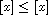 for all ![[srfi-Z-G-52.png]](srfi-Z-G-52.png) .
.
``Antisymmetric'':
Consider ![[srfi-Z-G-53.png]](srfi-Z-G-53.png) such that
such that ![[srfi-Z-G-54.png]](srfi-Z-G-54.png) and
and ![[srfi-Z-G-55.png]](srfi-Z-G-55.png) .
By definition of 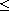, this means 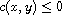 and
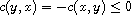 by (A).
Hence,
.
By definition of 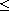, this means 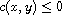 and
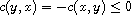 by (A).
Hence, ![[srfi-Z-G-59.png]](srfi-Z-G-59.png) which means 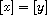.
which means 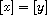.
``Transitive'':
Consider ![[srfi-Z-G-61.png]](srfi-Z-G-61.png) such that
such that ![[srfi-Z-G-62.png]](srfi-Z-G-62.png) and
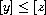.
By definition of
and
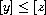.
By definition of ![[srfi-Z-G-64.png]](srfi-Z-G-64.png) this means
this means ![[srfi-Z-G-65.png]](srfi-Z-G-65.png) and 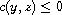.
By (T) this implies
and 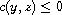.
By (T) this implies ![[srfi-Z-G-67.png]](srfi-Z-G-67.png) which means 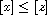.
which means 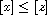.
``Comparable'':
For ![[srfi-Z-G-69.png]](srfi-Z-G-69.png) , 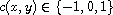
as
, 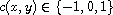
as ![[srfi-Z-G-71.png]](srfi-Z-G-71.png) is a compare function.
Hence,
is a compare function.
Hence, ![[srfi-Z-G-72.png]](srfi-Z-G-72.png) , meaning
, meaning ![[srfi-Z-G-73.png]](srfi-Z-G-73.png) ,
or 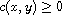, meaning 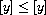 by (A).
,
or 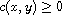, meaning 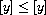 by (A).
Finally, the last theorem shows the converse of the previous two: There is a unique compare function for each total order on a set of equivalence classes.
Let ![[srfi-Z-G-76.png]](srfi-Z-G-76.png) be a set,
be a set, ![[srfi-Z-G-77.png]](srfi-Z-G-77.png) an equivalence relation on
an equivalence relation on ![[srfi-Z-G-78.png]](srfi-Z-G-78.png) ,
and
,
and ![[srfi-Z-G-79.png]](srfi-Z-G-79.png) a total order on the set of equivalence classes
with respect to
a total order on the set of equivalence classes
with respect to ![[srfi-Z-G-80.png]](srfi-Z-G-80.png) .
Then the function
.
Then the function ![[srfi-Z-G-81.png]](srfi-Z-G-81.png) defined by
defined by
is a compare function on ![[srfi-Z-G-83.png]](srfi-Z-G-83.png) giving rise to the order
giving rise to the order ![[srfi-Z-G-84.png]](srfi-Z-G-84.png) and the equivalence relation 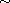.
and the equivalence relation 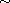.
First note that ![[srfi-Z-G-86.png]](srfi-Z-G-86.png) is well-defined as a function, because
is well-defined as a function, because
![[srfi-Z-G-87.png]](srfi-Z-G-87.png) and
and ![[srfi-Z-G-88.png]](srfi-Z-G-88.png) imply
imply ![[srfi-Z-G-89.png]](srfi-Z-G-89.png) (i.e.
(i.e. ![[srfi-Z-G-90.png]](srfi-Z-G-90.png) )
by the fact that
)
by the fact that ![[srfi-Z-G-91.png]](srfi-Z-G-91.png) is (weakly) antisymmetric.
We check the axioms of a compare function:
is (weakly) antisymmetric.
We check the axioms of a compare function:
``(R)'':
Reflexivity of ![[srfi-Z-G-92.png]](srfi-Z-G-92.png) implies
implies ![[srfi-Z-G-93.png]](srfi-Z-G-93.png) for all
for all ![[srfi-Z-G-94.png]](srfi-Z-G-94.png) .
.
``(A)'':
Consider ![[srfi-Z-G-95.png]](srfi-Z-G-95.png) .
Then
.
Then ![[srfi-Z-G-96.png]](srfi-Z-G-96.png) or
or ![[srfi-Z-G-97.png]](srfi-Z-G-97.png) because 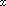 and
because 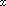 and ![[srfi-Z-G-99.png]](srfi-Z-G-99.png) are comparable with
are comparable with ![[srfi-Z-G-100.png]](srfi-Z-G-100.png) .
If both properties hold then
.
If both properties hold then ![[srfi-Z-G-101.png]](srfi-Z-G-101.png) , meaning
, meaning ![[srfi-Z-G-102.png]](srfi-Z-G-102.png) ,
so 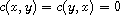.
Otherwise, either 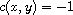 and 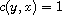 or
the signs are flipped.
In either case, 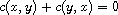.
,
so 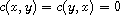.
Otherwise, either 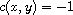 and 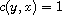 or
the signs are flipped.
In either case, 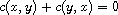.
``(T)'':
Consider ![[srfi-Z-G-107.png]](srfi-Z-G-107.png) such that 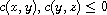.
Then 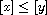 and
such that 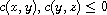.
Then 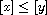 and ![[srfi-Z-G-110.png]](srfi-Z-G-110.png) by definition of
by definition of ![[srfi-Z-G-111.png]](srfi-Z-G-111.png) .
Since
.
Since ![[srfi-Z-G-112.png]](srfi-Z-G-112.png) is transitive, this implies
is transitive, this implies ![[srfi-Z-G-113.png]](srfi-Z-G-113.png) ,
meaning
,
meaning ![[srfi-Z-G-114.png]](srfi-Z-G-114.png) .
.
At this point the mathematics of compare functions is finished. However, it is instructive to explore constructions making new compare functions from old ones.
Let ![[srfi-Z-G-115.png]](srfi-Z-G-115.png) be a compare function on
be a compare function on ![[srfi-Z-G-116.png]](srfi-Z-G-116.png) .
Then 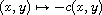 is also a compare function on
.
Then 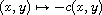 is also a compare function on ![[srfi-Z-G-118.png]](srfi-Z-G-118.png) ;
it is identical to 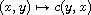.
;
it is identical to 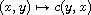.
As it happens, there are only two functions mapping
![[srfi-Z-G-121.png]](srfi-Z-G-121.png) into itself such that
is a compare function if
into itself such that
is a compare function if ![[srfi-Z-G-123.png]](srfi-Z-G-123.png) is one: and
.
is one: and
.
Let ![[srfi-Z-G-126.png]](srfi-Z-G-126.png) be a compare function on
be a compare function on ![[srfi-Z-G-127.png]](srfi-Z-G-127.png) and
consider a function .
Then
and
consider a function .
Then
is a compare function on the set .
One could be tempted to consider the case , . But this only results in a compare function (i.e. (R), (A), (T) hold) if , , and are closely related.
Let ![[srfi-Z-G-136.png]](srfi-Z-G-136.png) be compare
functions on the same set
be compare
functions on the same set ![[srfi-Z-G-137.png]](srfi-Z-G-137.png) .
Then
.
Then
is a compare function. By induction, this construction can be repeated a finite number of times, e.g. starting at the coarsest of all compare functions: .
Let ![[srfi-Z-G-140.png]](srfi-Z-G-140.png) be disjoint sets and let
, be compare functions on
be disjoint sets and let
, be compare functions on ![[srfi-Z-G-143.png]](srfi-Z-G-143.png) , , resp.
Then
, , resp.
Then
is a compare function on .
The function refines ``'' by
![[srfi-Z-G-148.png]](srfi-Z-G-148.png) on
on ![[srfi-Z-G-149.png]](srfi-Z-G-149.png) and
and ![[srfi-Z-G-150.png]](srfi-Z-G-150.png) on
on ![[srfi-Z-G-151.png]](srfi-Z-G-151.png) , resp.
This construction can be generalized to an arbitrary family
(mind the axiom of choice) of compare functions
on disjoint domains.
, resp.
This construction can be generalized to an arbitrary family
(mind the axiom of choice) of compare functions
on disjoint domains.
In Scheme, this SRFI defines macros refine-compare, select-compare, and cond-compare for providing convenient and efficient ways of defining refinement, hierachical extension, argument transformation, and sign flip.